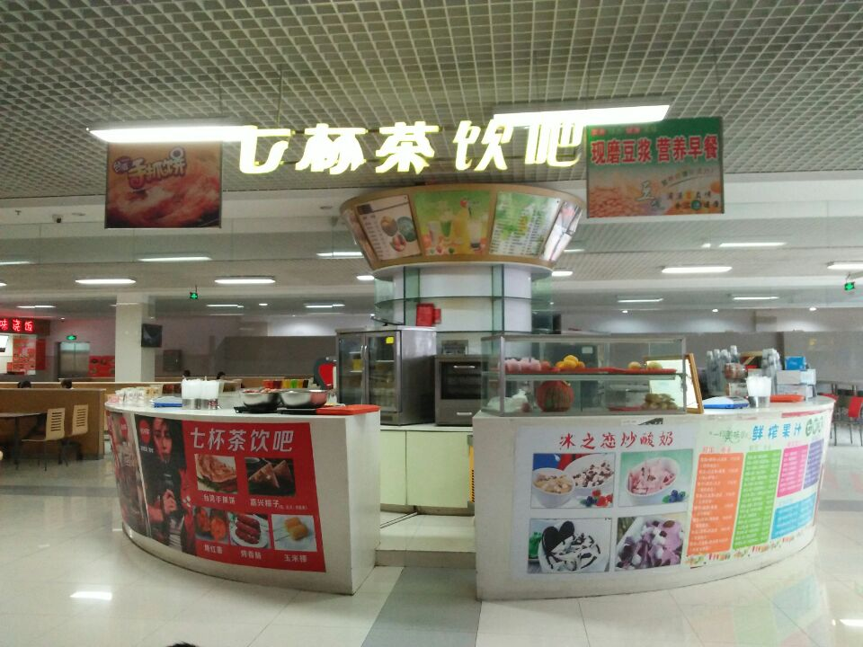
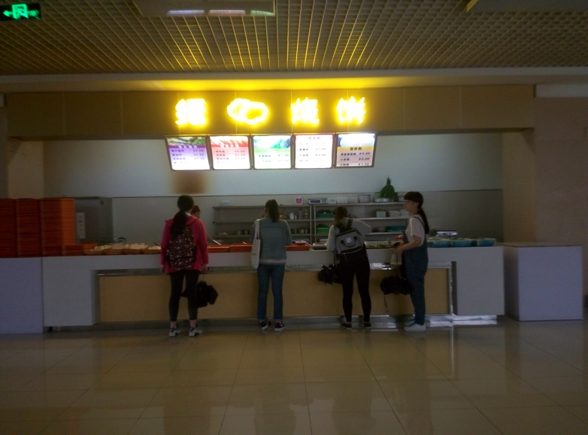
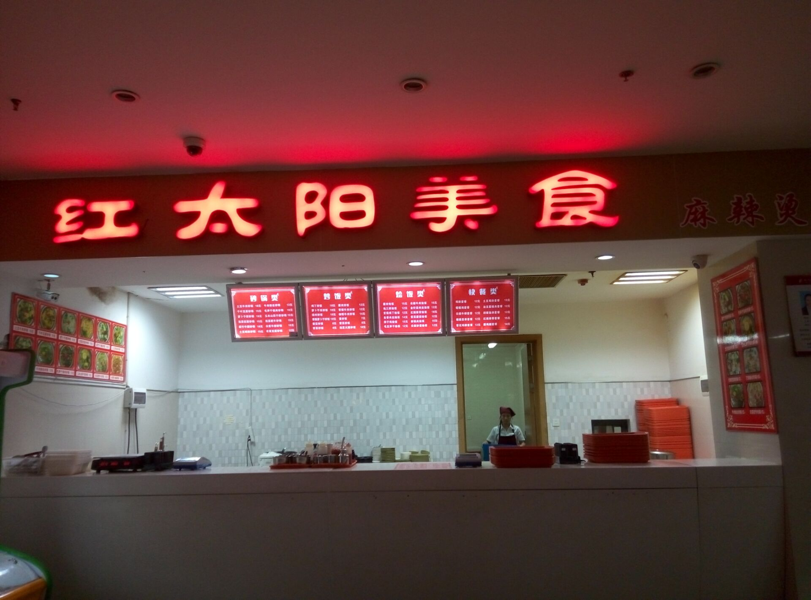
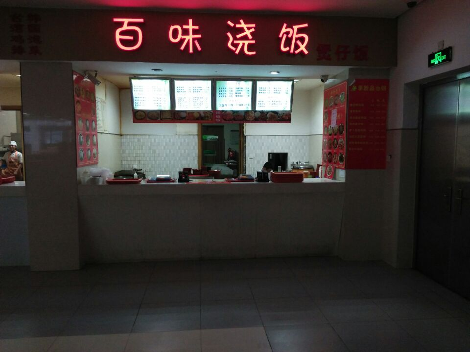
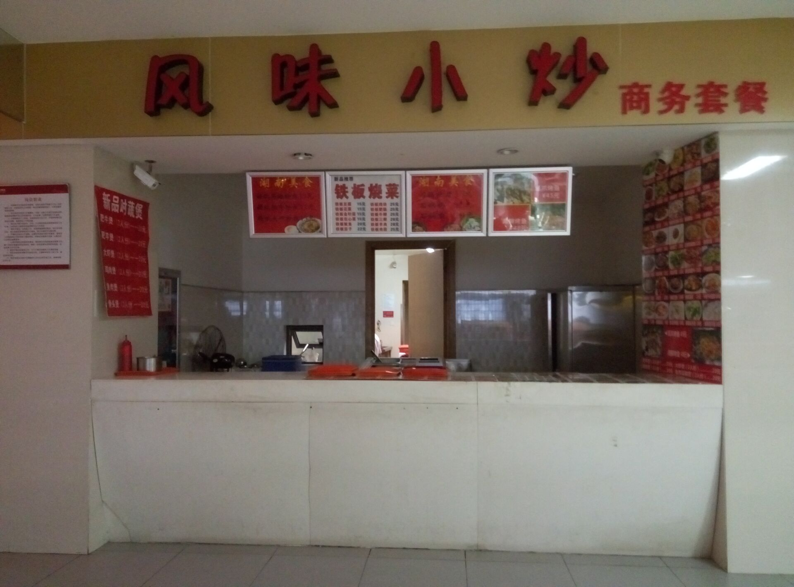
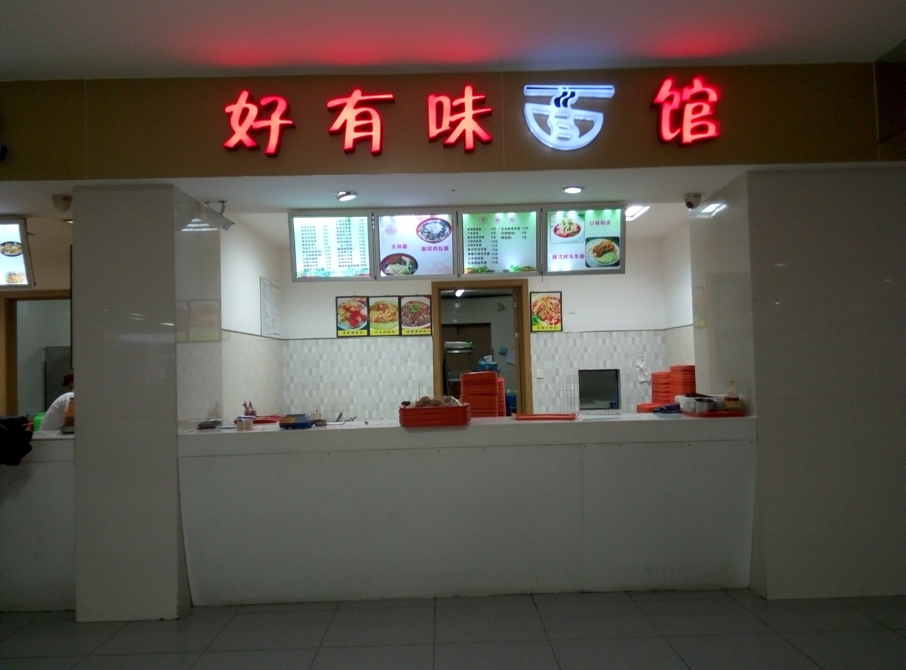
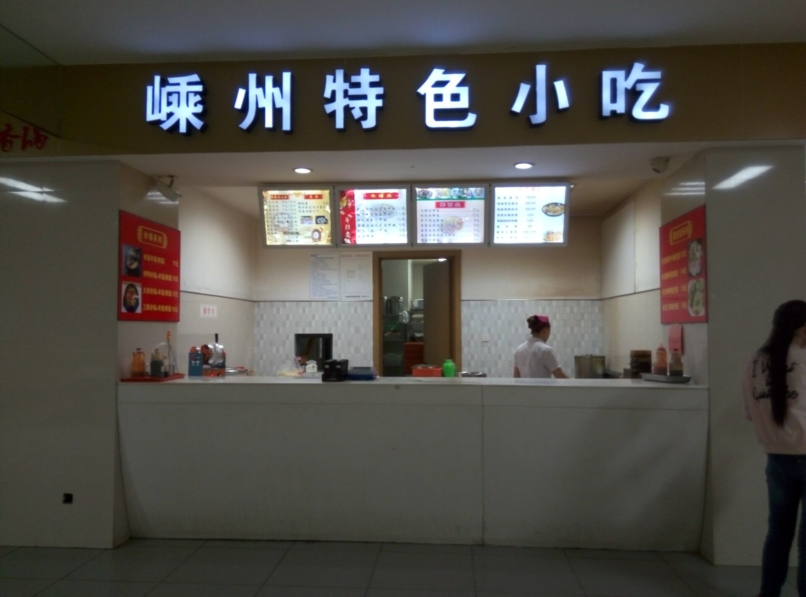
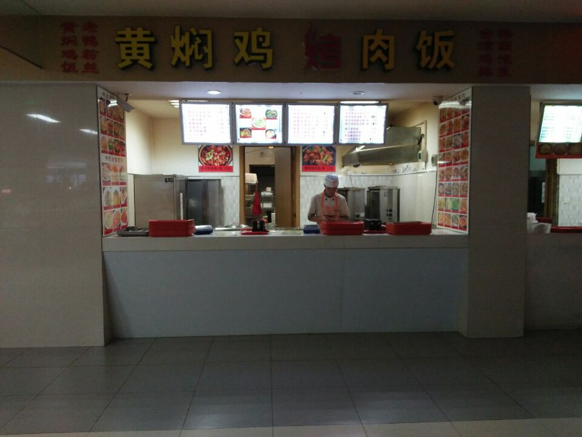
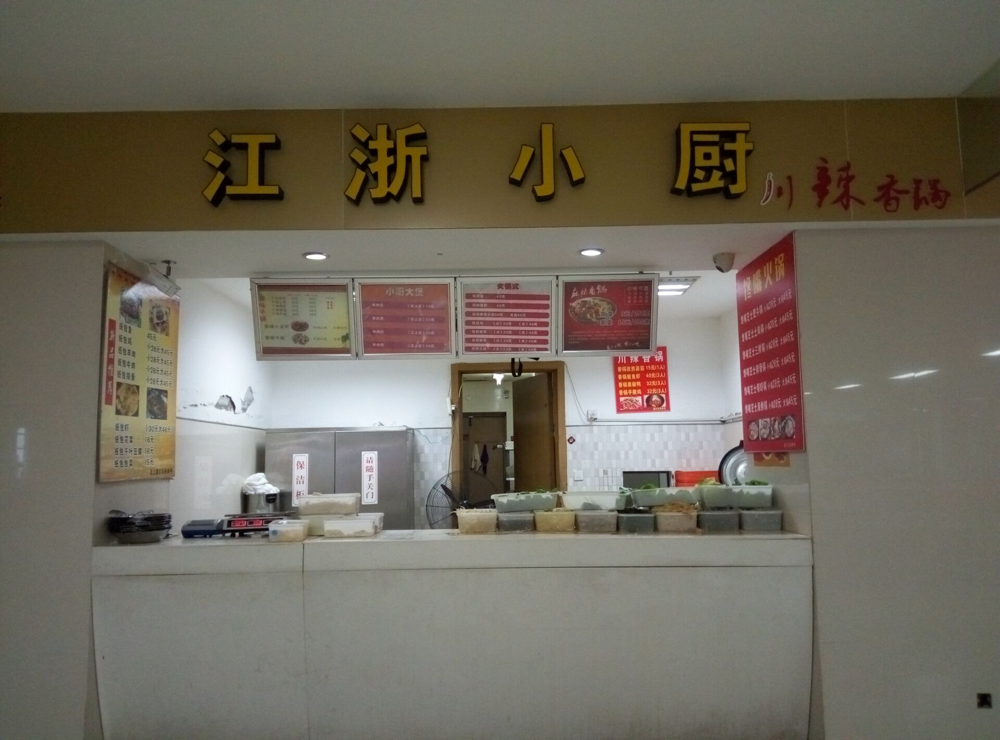

首页
食堂
美食
其他
员工墙
购物车
评论
欢迎来到美食广场
地处美食广场的中心地带,卖的东西非常多,价格也比较合理，生意还是挺好的。推荐玉米浆和牛奶燕麦粥

七杯茶饮料吧
刚来大学的时候是没有这家店的，每次想吃烧饼都要往镇上跑，烧饼的味道还可以了。梅干菜肉饼（肉超多），和白粥是绝配

缙云烧饼
印象中这家店刚开不久，吸引我的当然是麻辣烫了。荤素同价，是肉食小朋友的极佳选择，然后就是调料是要自己加的。推荐鸡丁炒饭，都是鸡块

红太阳美食
一直觉得这家点的位置有点偏，每次都暗暗的。最近出的铁板饭还是超级好吃的。推荐鸡块铁板饭，超级香。还有我可是吃过无数次的鸡柳炒饭的

百味浇饭
因为“商务”二字，都没吃过几次。最近出了那个就是一个盘子三个菜的套餐，里面的甜玉米真心好吃，还有糖醋里脊、千层豆腐等等

风味小炒
第一次来杭师大吃的就是这家店的大排面。后来吃几次青菜肉丝面，汤非常鲜，就是肉丝非常少。韩式拌乌冬面、红油鸡丝拌面非常适合这个季节吃哦

好有味面馆
真的是迄今为止我吃的最多的一家店，年糕一生推。好像是唯一提供正规的早餐的，推荐酒酿小圆子（有点甜）和鸡蛋饼（很香）。还有炒年糕和金针菇年糕

嵊州特色小吃
大一的时候吃过黄焖鸡米饭，然后就没有然后了。这家店的烤肉饭还是可以的，据说烤肉汁特别好吃。

黄焖鸡米饭
哇，这家店主营的应该是香锅了吧。味道是真的好，就是价格有点贵。

江浙小厨